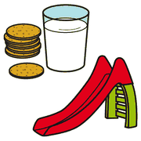
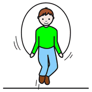
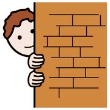
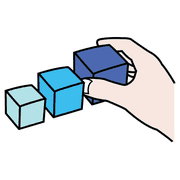
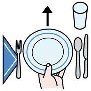

Dai giochi ai concetti, modulo 8
I giochi di cortile
Campana, quattro cantoni, salto della corda, palla prigioniera: i giochi di sempre sono già laboratori di matematica.
mediatori
attivi
Perché funzionano

cortile giocare
giocare problema
problema- Contengono un problema vero: vincere, non farsi prendere, arrivare primi.
- Coinvolgono tutto il corpo, non solo vista e udito.
- Hanno regole: sono già piccoli sistemi logici.
- Si ripetono con piccole varianti: ogni partita è un problema nuovo.
Sono, in pratica, mediatori attivi: stanno a metà tra la realtà vissuta e il concetto da costruire.
Un gioco, tanti concetti

saltare la corda
nascondersipalla correre
correre| Gioco | Spazio | Tempo | Logica e numero |
|---|---|---|---|
| Quattro cantoni | angoli, centro, percorsi | partenze contemporanee | un posto in meno dei giocatori |
| Salto della corda | dentro e fuori | ritmo, entrare nel momento giusto | contare i salti, superare un record |
| Nascondino | visibile e nascosto, vicino e lontano | durata della conta | contare ad alta voce, ordine di arrivo alla tana |
| Palla prigioniera | campo, linee, zone | anticipare la traiettoria | squadre, eliminati e liberati |
| Gioco delle biglie o delle figurine | distanza dal bersaglio | turni | confrontare quante all'inizio e alla fine |
Anche a casa

riordinare
apparecchiare famiglia
famigliaLe piccole incombenze domestiche sono problemi preziosi:
- riordinare i giochi: classificare;
- apparecchiare: corrispondenze e conteggi;
- impastare, tagliare, rastrellare: forza e tono muscolare.
Lasciare che il bambino faccia fatica fisica prepara la fatica mentale.per le famiglie